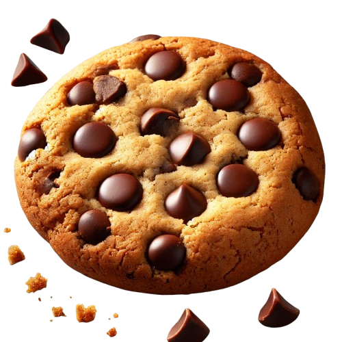

Chocolate Chip Cookies
Ingredients
- 1 cup of unsalted butter
- 1/2 cup of white sugar
- 1cup of brown sugar
- 1 teaspoon of vanilla extract
- 2 eggs
- 2 1/2 all-purpose flour
- 1 teaspoon of baking soda
- 2 cups ofchocolate chips(any kind your chose)
How to make step by step
- Preheat your oven to 375 degrees.
- Then in a large bowl, mix together the butter,brown sugar and normal sugar until it's smooth.
- After beat in the eggs one at a time.
- Next combine flour,baking soda and and salt; stir into the sugar mixture.
- Then mix in the chocolate chips.
- After drop by drop tablespoonsfuls onto ungreased cookie sheets.
- Bake for 10-12 minutes in the oven,or until the edges are golden.
- Finally remove cookies from tha baking sheet to cool on the wire racks.
- Enjoy!!!